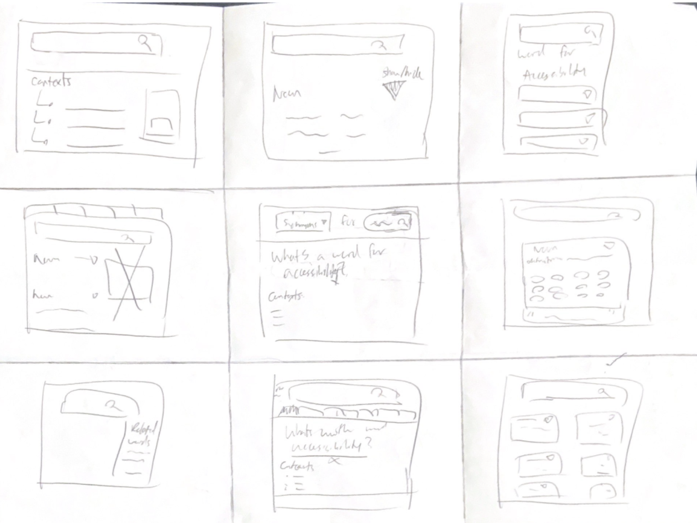
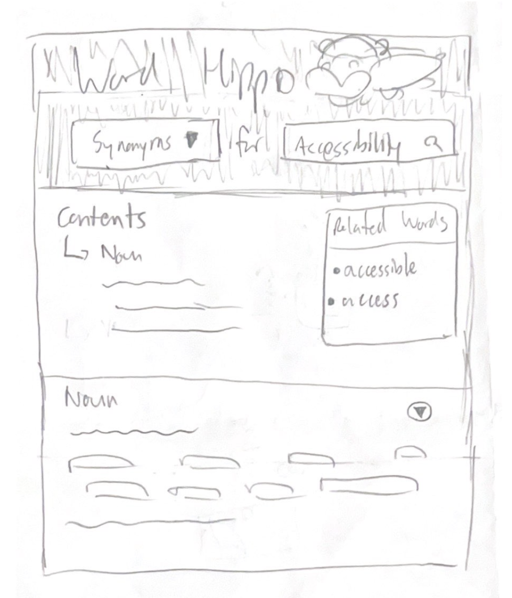
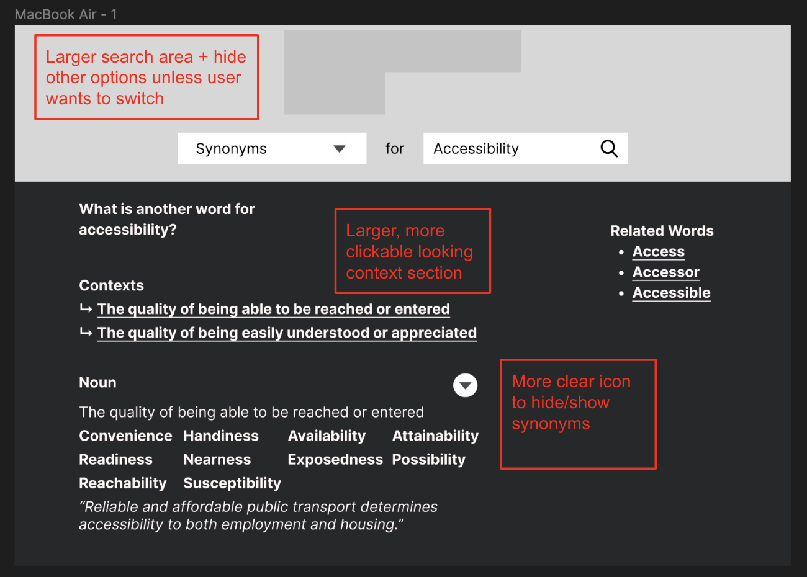
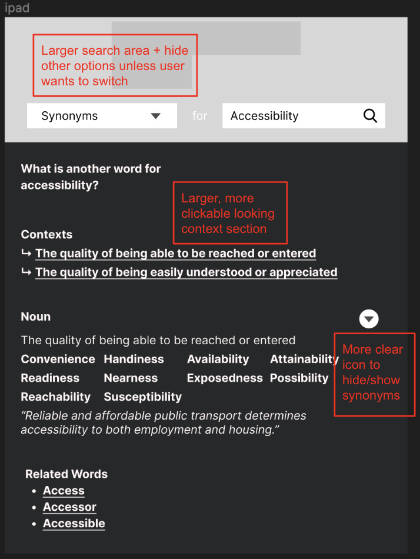
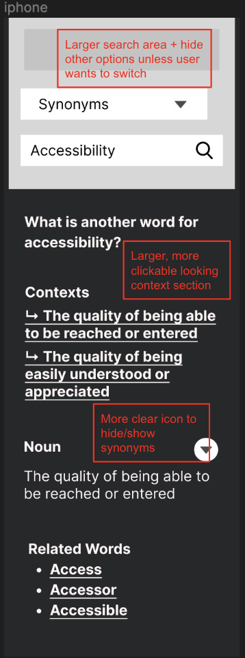
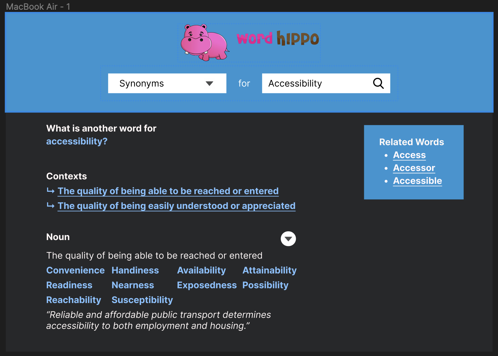
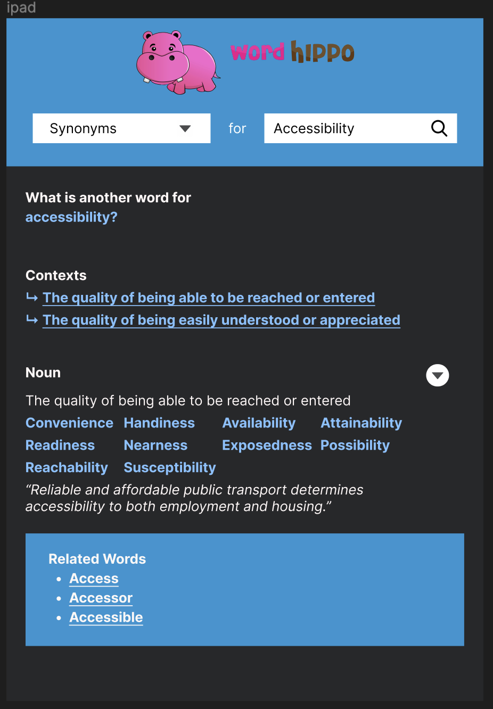
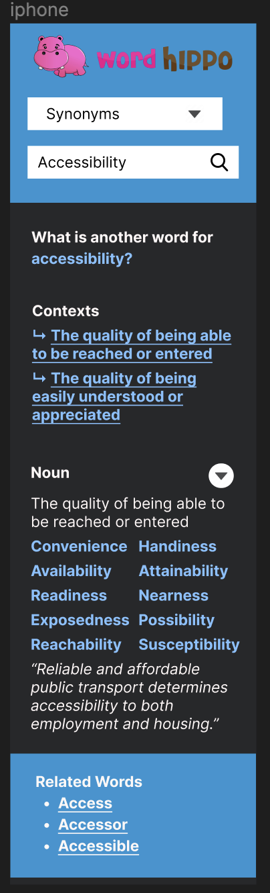
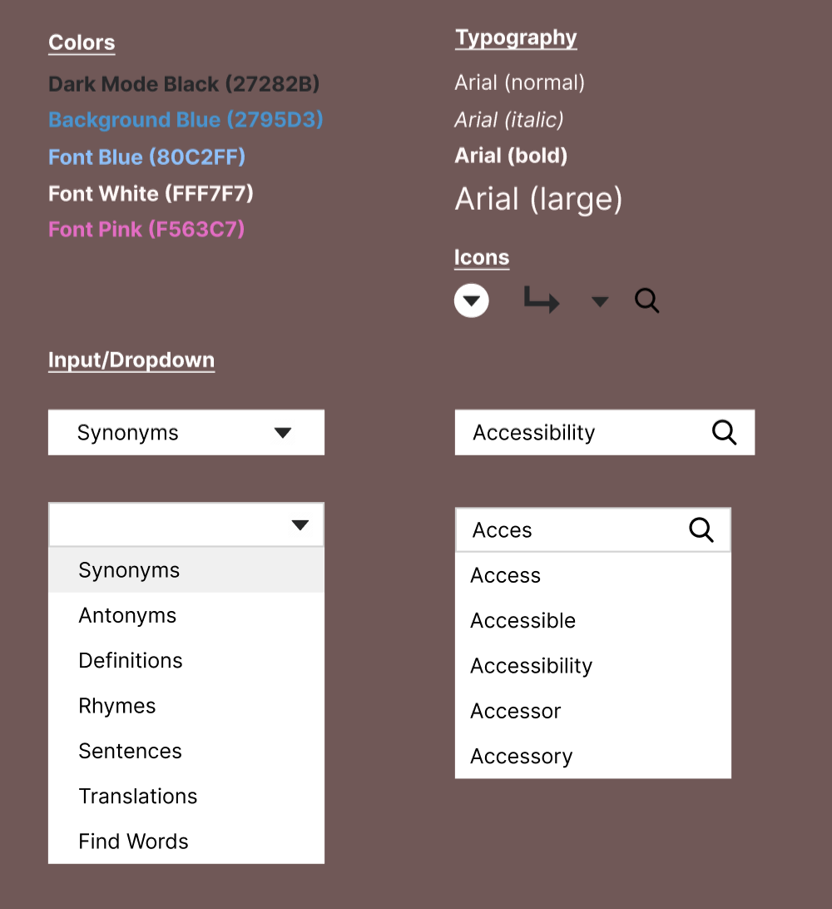

Redesigning Word Hippo's Website
Context
In CSCI 1300, one of our assignments is to redesign a currently existing webpage to be more responsive, accessible, and usable overall. I chose Word Hippo because it’s a site that I use a lot when writing essays, emails, etc. and I’ve always been curious about how well-designed its interface was with respect to these categories.
Part 1: Identifying Usability Problems
After a bit of tinkering with the site, I identified the following issues:
Usability
- Arrow icons + other buttons are ambiguous/unintuitive
- Issues when shrinking the window (e.g. to split screen Word Hippo and Gmail)
- "Contexts" dropdown does not appear to be interactable
- Search bar is small, and other search bars clutter the site
Accessibility
- Many missing form labels, so navigating with a screen reader is more challenging
- Lots of other miscellaneous issues (e.g. extraneous tab indexes, lack of page regions), which complicate keyboard navigation
- Less importantly, but all Hippos lack alt texts!
After identifying these issues, I began to roughly plan out possible redesigns to address them.
Part 2: Starting the Visual Redesign
The first step to any redesign is to come up with as many ideas as possible, then consolidate them into a final rough sketch:
Initial Sketches
Final Sketch
Then, I developed some low fidelity wireframes for this final sketch for various screen sizes, intentionally focusing on the usability issues identified earlier:
Laptop
Tablet
Phone
Part 3: Finalizing the Responsive Redesign
Lastly, I polished up some high-fidelity wireframes based off of the previous iterations:
Laptop
Tablet
Phone
along with a basic style guide outlining the fonts, colors, and components used in the site:
which leads to my final Word Hippo redesign!